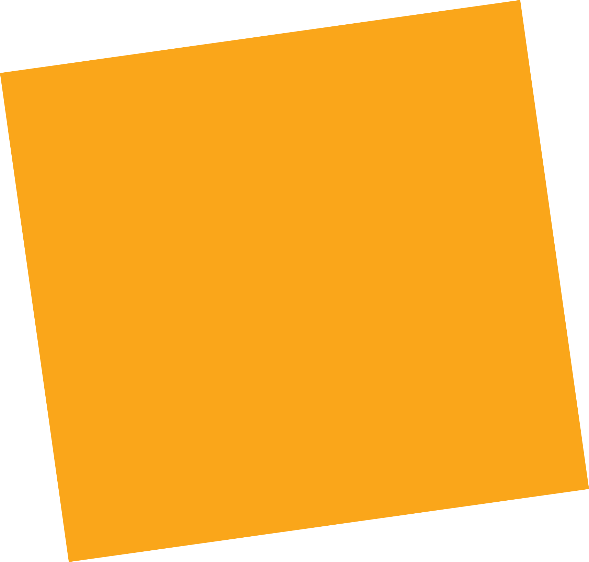
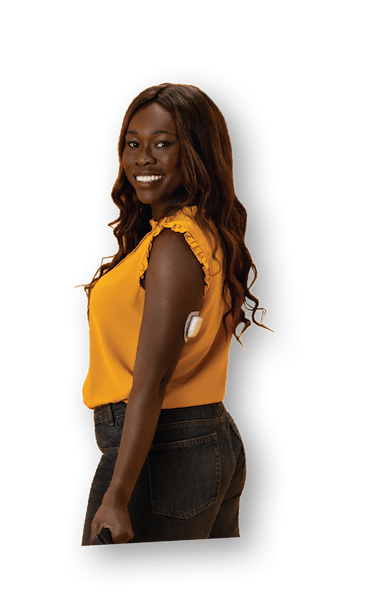
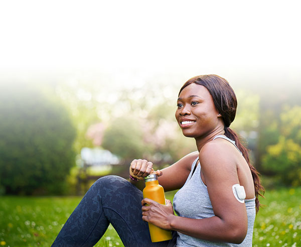

The Omnipod 5 Automated Insulin Delivery System is a single hormone insulin delivery system intended to deliver U-100 insulin subcutaneously for the management of type 1 diabetes in persons aged 2 and older requiring insulin. Refer to the Omnipod 5 Automated Insulin Delivery System User Guide and www.omnipod.com/sscp for complete safety information including indications, contraindications, warnings, cautions, and instructions.
©2026 Insulet Corporation. All rights reserved.